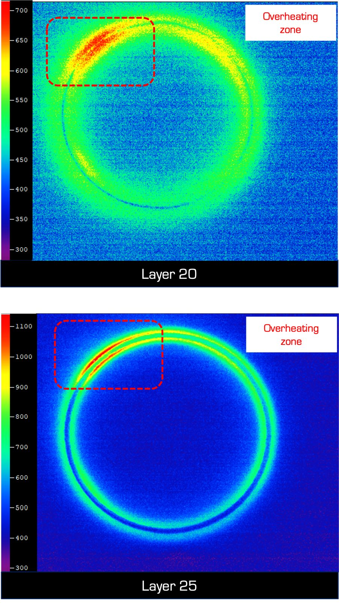
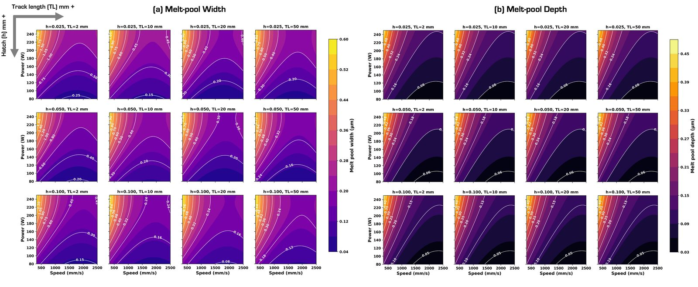
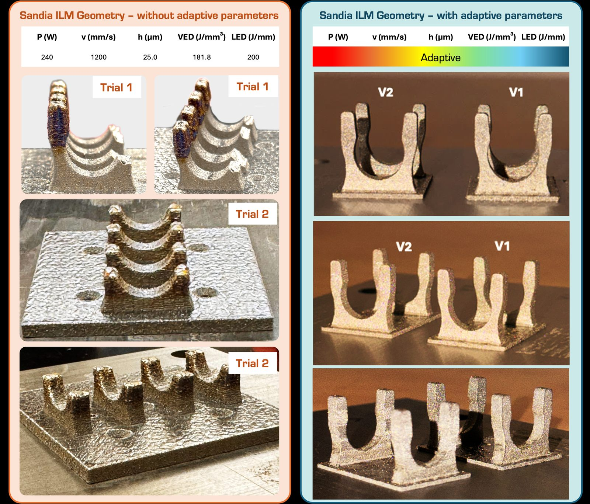

Work / Project 4 of 5
Where the melt pool runs hot
Short scan tracks overheat and long ones don't, so part geometry quietly changes the process window. The fix was a parameter set that follows the geometry.
- Alloy
- Ni-rich NiTi
- Methods
- In-situ thermal imaging, melt pool mapping
- Test geometry
- Sandia interlocking metasurface
- My role
- First author
- Status
- Paper in preparation

In-situ thermal imaging of a ring geometry shows the problem plainly. On layer 20 one arc of the ring runs several hundred degrees hotter than the rest of the same layer, and by layer 25 the gap has widened again. Nothing changed in the parameter set. What changed is that the laser returns to the same neighbourhood sooner, because the scan vectors there are shorter.
To quantify it, I mapped melt pool width and depth across laser power, scan speed, hatch spacing and track length. Track length moves melt pool depth about as much as a meaningful change in power does. That has an uncomfortable consequence: a single parameter set can't be right everywhere on a part whose cross section changes, which is most parts worth printing.
The fix is to let the parameters follow the geometry. On the Sandia interlocking geometry, a fixed set at 240 W, 1200 mm/s and 25 µm hatch spacing (181.8 J/mm³) built the thin overhanging arcs badly: slumped features, heavy heat tint, two trials in a row. With parameters adapted to local track length, the same geometry came out clean in both versions.
The scan strategy guidelines from this work are now used across the lab's builds. The paper is in preparation.

